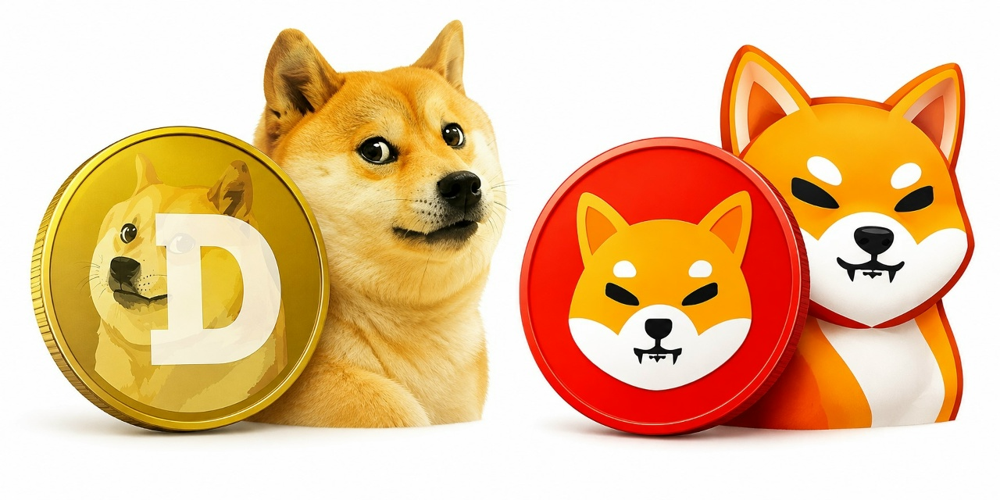
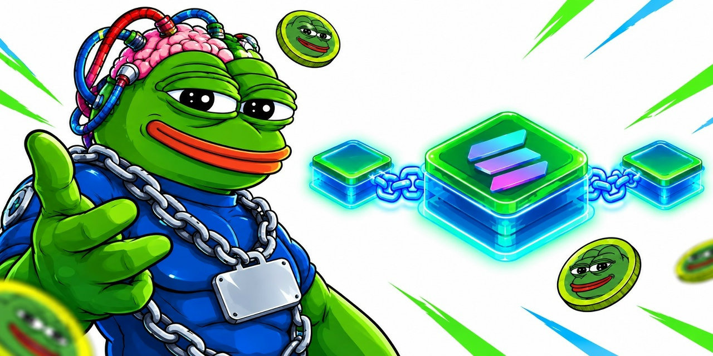
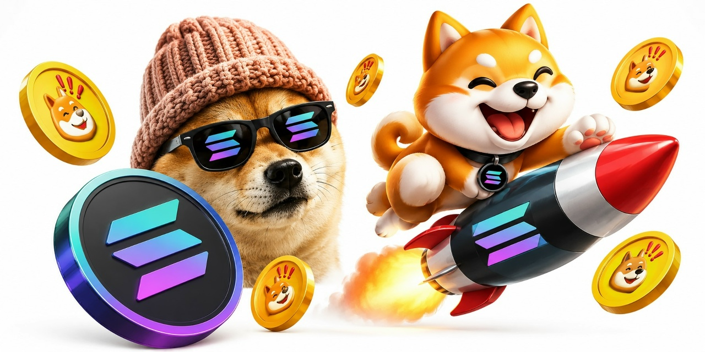

In 2013, Billy Markus and Jackson Palmer created Dogecoin as a joke — a parody of the booming cryptocurrency market. The Shiba Inu dog meme became its face, and a community of "shibes" formed around it. Nobody could have predicted that a joke coin would one day reach a market capitalization of over $80 billion.
For years Dogecoin remained a niche internet curiosity. That changed in 2021, when Elon Musk began tweeting about it, calling it "the people's crypto." The price skyrocketed, and Dogecoin became a household name. In its wake, Shiba Inu (SHIB) launched in 2020 as an "experiment" — and soon surpassed Dogecoin in market cap, briefly becoming the 11th largest cryptocurrency in the world.
Today, Dogecoin and Shiba Inu are blue chips of the meme coin world. They paved the way for thousands of imitators — but none have matched their cultural impact.

Pepe Unchained (PEPU) is one of the most talked-about meme coin presales of 2024–2025. Unlike most meme coins that run on existing blockchains, PEPU is building its own Layer-2 network on Ethereum — promising faster transactions and lower fees.
Most meme coins have zero utility. Pepe Unchained flips that narrative by offering a dedicated "Pepe Chain" — a Layer-2 solution designed specifically for meme coin trading. The presale raised over $60 million, a testament to the hype surrounding the project.
Critics warn that hype alone doesn't guarantee long-term value. But supporters argue Pepe Unchained represents the next evolution of meme coins — where virality meets real infrastructure.

Solana has become the unofficial home of meme coins in 2024–2025. Two names dominate: dogwifhat (WIF) and Bonk (BONK). Both started as community jokes, and both reached multi-billion dollar valuations.
Solana's low transaction fees (often less than $0.01) and high speed make it perfect for meme coin trading. On Ethereum, a single swap can cost $20–$50 in gas fees — on Solana, it's essentially free. This attracted a new generation of degen traders.
dogwifhat launched in late 2023 as a simple meme: a Shiba Inu wearing a pink knitted hat. Within months, WIF became a top-30 cryptocurrency by market cap. Its community, known as the "WIF army," is one of the most active in crypto.
Bonk launched in December 2022 as an airdrop to Solana users, aiming to revive the ecosystem after the FTX collapse. It worked — BONK became a symbol of Solana's comeback, and its price surged over 10,000% in 2023.
Together, WIF and BONK prove that meme coins are no longer an Ethereum-only phenomenon. Solana's speed and culture have made it the new capital of degen finance.
Why do people pour money into coins with no fundamentals? The answer lies in psychology. Meme coin trading is driven by FOMO (fear of missing out), community belonging, and the thrill of gambling — all wrapped in a layer of internet culture.
When a meme coin pumps 500% in a day, social media explodes with screenshots of life-changing gains. The fear of missing out kicks in, and traders ape in at the top — often right before the crash.
Holding a meme coin is like joining a tribe. Whether it's Dogecoin, Shiba, or Pepe, each coin has its own culture, inside jokes, and rituals. This sense of belonging is a powerful motivator — people hold coins not because of utility, but because they feel part of something bigger than themselves.
Meme coin trading triggers the same dopamine response as gambling. The volatility — sometimes 50% swings in hours — creates an addictive loop. Experienced traders learn to manage this; beginners often don't.
The takeaway? Successful meme coin trading requires emotional discipline and strict risk management. Treat it like entertainment, not an investment strategy.
Base, Coinbase's Layer-2 network, has become a breeding ground for social tokens and community-driven memecoins. Combined with platforms like Friend.tech, it created a new wave of "socialfi" — where social influence itself becomes a tradable asset.
Base launched in August 2023 as a Layer-2 on Ethereum, backed by Coinbase. Low fees and easy onboarding made it an instant hit with degen traders. Within months, Base became the third-largest Layer-2 by total value locked.
Friend.tech let users buy "keys" tied to individual Twitter accounts. The price of a key rose as more people bought in, creating a market for social influence itself. Though the hype faded, the model inspired a wave of similar experiments.
Base spawned dozens of community-driven meme coins — many tied to specific creators, online communities, or cultural moments. Unlike traditional meme coins, these tokens blurred the line between social capital and financial speculation.
Whether Base's socialfi wave becomes a lasting trend or a passing fad, it has already reshaped how we think about community, influence, and value on the blockchain.
In April 2023, a token called Pepe (PEPE) launched on Ethereum with no presale, no roadmap, and no utility. Within weeks, it reached a multi-billion dollar market cap, triggering the biggest meme coin season since 2021.
Pepe the Frog was already one of the most recognizable internet memes. Its crypto version tapped into a massive online culture — 4chan, Reddit, Twitter — and turned internet fame into market cap. Early buyers turned $1,000 into millions.
Pepe's success ignited a chain reaction. Dozens of copycat tokens appeared: Pepe 2.0, Pepe Unchained, Based Pepe, and countless others. Some pumped and dumped within hours; a few survived. The total meme coin market cap briefly surpassed $120 billion.
Pepe proved that in crypto, attention is the scarcest resource. Whether this is healthy for the industry or a sign of speculation gone wild — that debate is far from over.